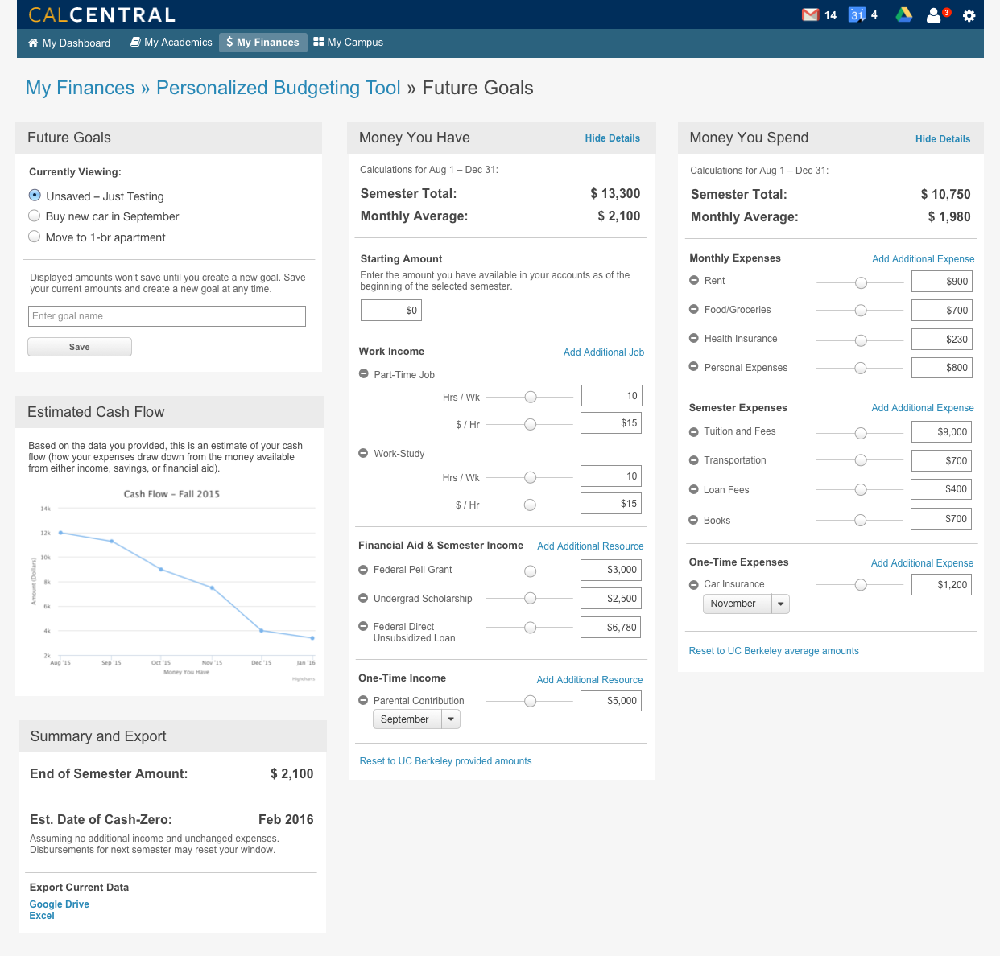
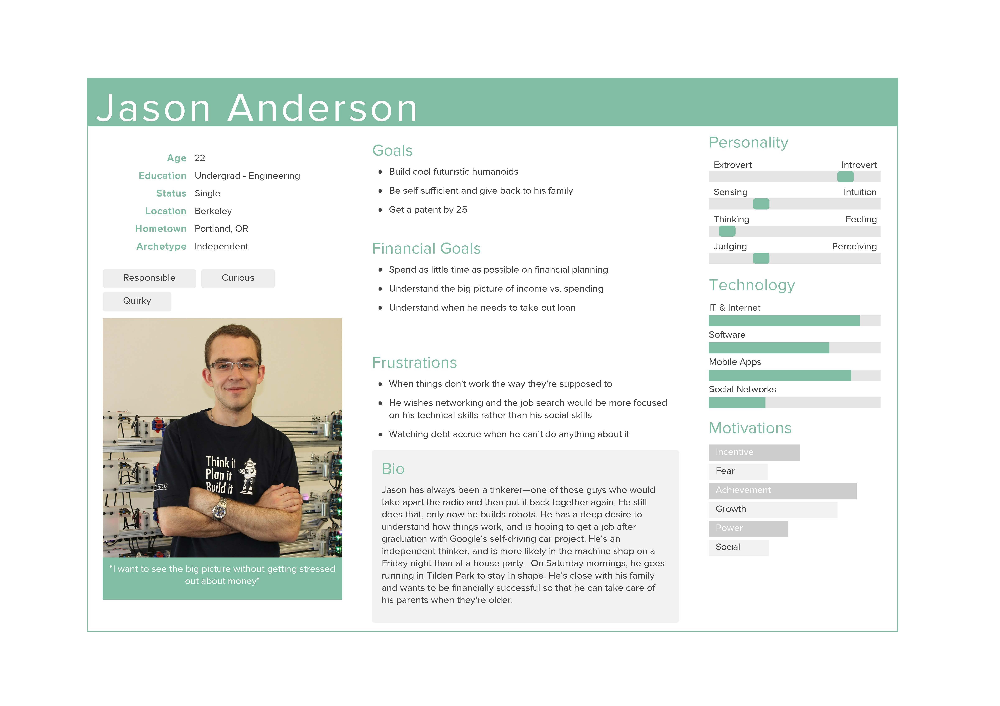
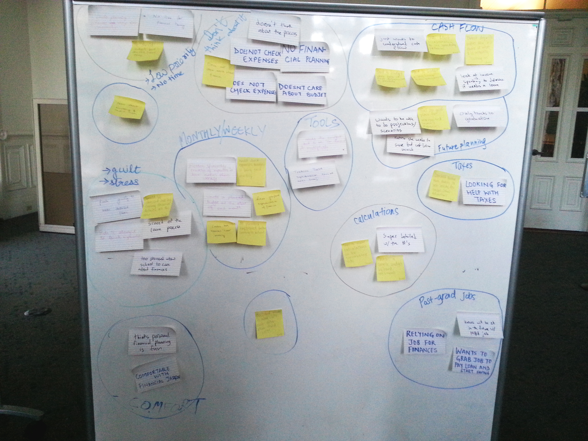
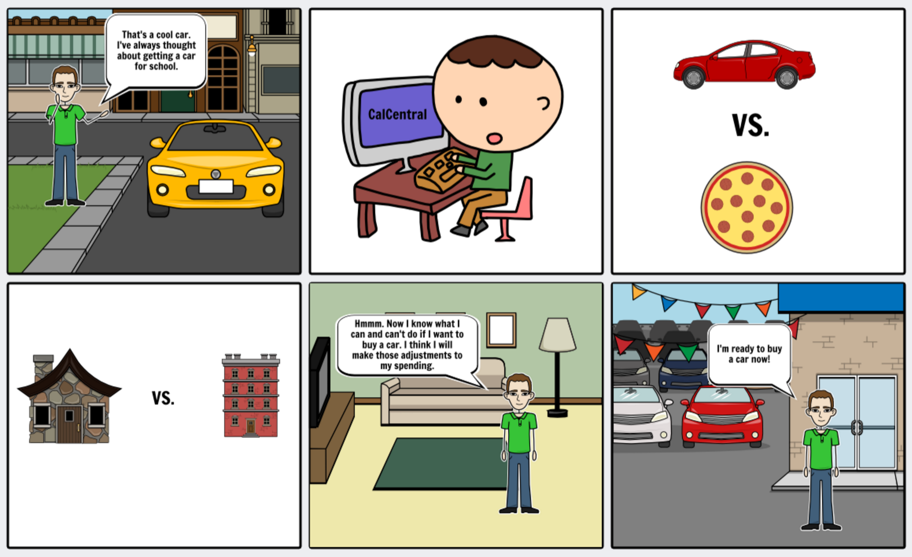
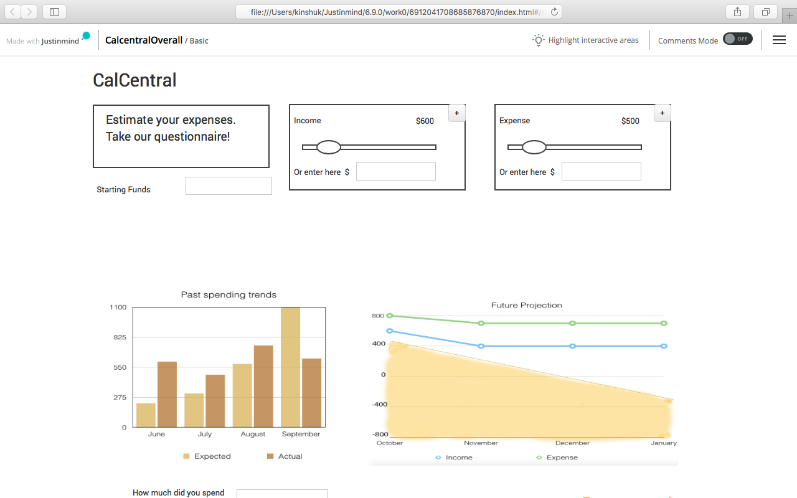

Developed as a part of semester long project for User Interface Design and Development class in a team of five with Andrew Wu, Molly Mahar, Pooja Jain and Astika Gupta.





Problem:
The Problem statement driving this project was "How to help Berkeley students finance better?"
Process:
We started out the process by outlining the major questions we wanted answers to, like do students budget at all? If they do, what tools do they use? Are their any difficulties they face with these tools? Where are the information gaps? Do students of different age group nd nationality think differently about money?
To get answersto these questions we conducted several interviews. We focused on covering as many distinct groups of students as possible and tried to understand their frustrations around money matters.
After interviews, we came up wih four personas based on the level of planning students do to manage their finances.
We started making several lo-fi prototype keeping in mind the goals of our primary persona.
After testing lo-fi prototypes we did a few versions of interactive prototypes. After more testing on the interactive prototype, we were able to flesh out the components we wanted to keep in our final version of the tool. These would solve the problems of our primary personas without completely ignoring the secondary ones. With the indights at this step we moved on to built a hi-fi prototype.
We conducted qualitative and quantitative usability tests on our hi-fi prototype and are in process of talking to important stake holders to integrate this tool with the current student portal.
Skills used:
Contextual inquiry and interviews, persona creation, paper prototyping, interaction design, usability testing.